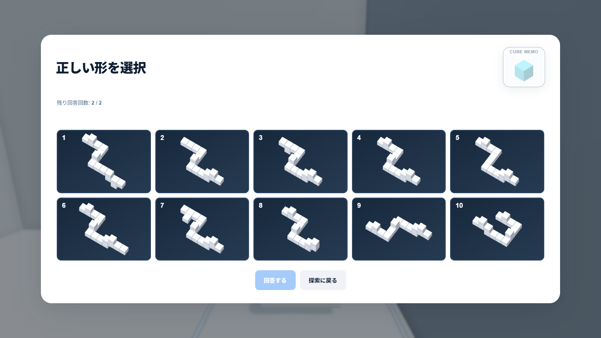
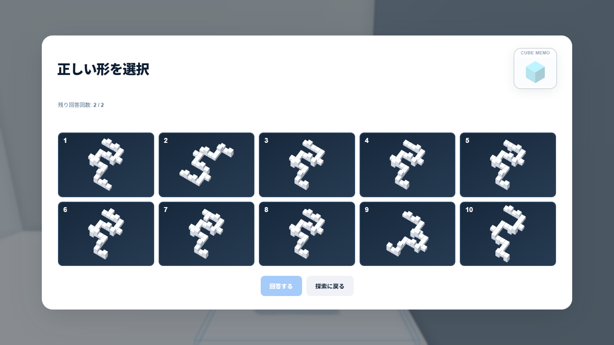
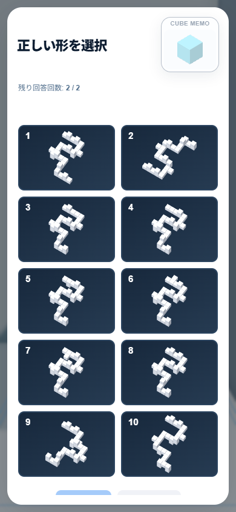

READY FOR USER QA — A-1 / A-2 / A-3のみ
| Stage | Theme | Main | 突出 | Total | 主経路の梯子 |
|---|---|---|---|---|---|
| A-1 | BASIC ROUTE | 13 | 3 | 16 | 1 |
| A-2 | VERTICAL ROUTE | 19 | 5 | 24 | 2 |
| A-3 | 3D SNAKE | 25 | 8 | 33 | 3（上り2・下り1） |
面接続の順序付き主経路＋突出Cube。突出はCanonicalに含めますが、ゴール到達には通過不要です。A-3には横の短い寄り道を2か所含みます。上部の突出はLOOK UPによる観察対象です。
STANDARDカタログ31問を維持し、別のAdvanced定義を共通カタログへ統合。section: advanced / stageType: route / goal / route metadataを追加しました。IDはadvanced_route_1〜3。既存Standard ID・保存内容・共通Memo Engine・SDKは変更していません。
Memoは既存Configから起動し、Canonical = rooms − start。全体の形・原点・突出を自動照合します。Hintは最初の不正解後に1回。新しい専用Memoは作成していません。
ContinueはAdvancedの最終プレイIDを復元。NEXT STAGEは同じセクション内で進みます。Home ShowcaseとStandardの31問進捗カウントは維持しています。
1正解＋9誤答。突出の欠落、終端短縮、左右反転、突出の延長など、接続を維持した近似候補です。ROUTEのみThree.jsで10枚を同一倍率・同一角度でレンダリングし、軽量な静止サムネイルへ転写。使用後のRendererは破棄します。Standard回答表示は従来のままです。
Stage SelectにSTANDARD／ADVANCED — ROUTEを分離表示。How To Playに9言語の説明を追加し、「1-1のみ」の表示を撤去しました。
A-1：実W/A/D入力で主経路を進み、梯子を登り、Memo編集→終点の回答→正解まで確認。プレイヤー位置のテスト用変更なし。
A-2：下階のテスト配置から実入力で梯子上昇、MemoのY方向ドラッグ配置を確認。A-2／A-3の回答フローは終点へのテスト配置を併用。不正解→Hint→Memo修正→探索入力→2回目の正解まで確認しました。両Stageの全経路を実入力で踏破したという意味ではありません。
AdvancedからReload→Continue復元、9言語切替、3問×Desktop/Mobileの10候補描画を確認。ブラウザエラーなし。回答画像の旧描画残りは実画面確認で発見し修正済み。
自動テスト205件PASS、Production Build PASS。Standardの既存31問・回答・移動・ジャンプ・梯子・POV・LOOK UP等の自動回帰も通過。
A-3（33 Cube / 206 colliders）：短時間のEdge headless測定でDesktop約60.6fps、Mobile相当約60.2fps。実機スマートフォン・YouTubeホスト性能を保証する値ではありません。既存500kBチャンク警告は継続しています。
User QAでは、ルートを覚える楽しさ、突出Cubeの分かりやすさ、Memoを使う必然性、A-2/A-3の全経路と難易度を確認してください。長時間耐久・実機検証は未実施です。A-4以降は作成せず、Production Gateには進みません。


